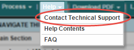
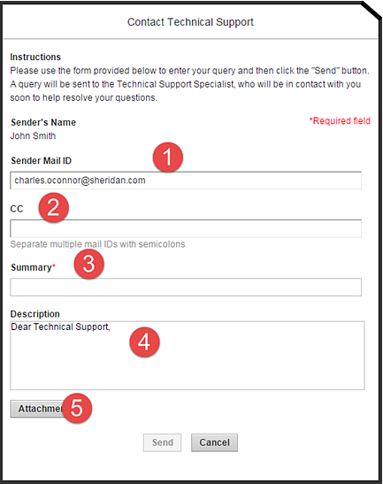

If you need assistance, check this Help system. If you can't find an answer or need additional support, use the Contact Technical Support link in the Help menu.

This command displays the Contact Technical Support form.
|
1–Sender Mail ID is your email address. If this isn't your address, please include your address in the CC line. 2–CC is a list of addresses to receive a copy of your support request. Remember to use semicolons between the addresses. 3–Include a brief Summary of your request, such as, I'm having a problem attaching files or Why can't I insert an equation? 4–The Description should include the steps you took, your version of Windows and which browser and version you are using. 5– Use Attachment to add any files, such as screen snapshots, to your support request. |
 |
When complete, click Send. ArticleExpress displays a confirmation dialog and sends your request to our support system here at Dartmouth Journal Services. You will receive a copy of the email sent to support.
cts.htm | Copyright © 2015 Dartmouth Journal Services All Rights Reserved.